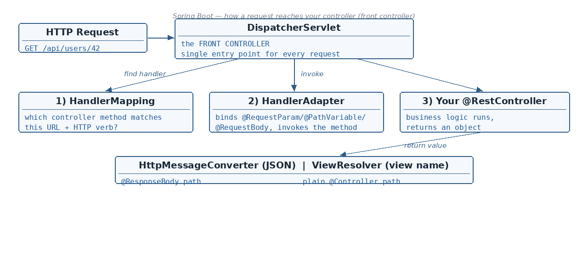

Where each annotation reads from
☕ 6 min read · 🎬 Video walkthrough · 📊 UML diagram · 💻 Runnable code
⚡ In a nutshell — What @Controller, @ResponseBody and @RestController really do · Mapping URLs with @RequestMapping — and the @GetMapping/@PostMapping shortcuts · Binding request data: @RequestParam, @PathVariable, @RequestBody · Custom parameter binding with a PropertyEditor and @InitBinder
It indicates that the class is responsible for handling incoming HTTP requests.

@Controller
public class PageController {
@RequestMapping("/home")
public String home() {
return "home"; // no @ResponseBody -> "home" is treated as a VIEW name
}
}
@ResponseBody, Spring will consider the response as the name of a view and tries to resolve and render it — e.g. return "user"; makes it look for user.jsp and try to render that page.@RestController = @Controller + @ResponseBody.
Every handler method's return value goes straight into the HTTP response body (usually as JSON) — no view resolution at all.
@RestController
public class UserRestController {
@RequestMapping(path = "/fetchUser", method = RequestMethod.GET)
public User fetchUser() {
return new User("Ram", "ram@example.com"); // serialized to JSON
}
}
Maps a URL path (and the HTTP method) to a controller class or method:
@RequestMapping(path = "/fetchUser", method = RequestMethod.GET)
Good to know: in Spring's own source code the
@RequestMappingannotation is itself annotated with@Reflective({ControllerMappingReflectiveProcessor.class})— that is how Spring registers reflection hints for controller mappings (used for AOT and native-image support).Added: shortcuts —
@GetMapping("/x")is exactly@RequestMapping(path = "/x", method = RequestMethod.GET). Likewise@PostMapping,@PutMapping,@DeleteMapping,@PatchMapping. Put a common prefix on the class:@RequestMapping("/api/users")at class level +@GetMapping("/{id}")on the method =GET /api/users/{id}.Added:
@RequestMapping(and the shortcuts) also takeconsumesandproduces— e.g.@PostMapping(path = "/users", consumes = "application/json", produces = "application/json")restricts whichContent-Typethe endpoint accepts and which media type it returns (content negotiation). A mismatch gives the client 415 Unsupported Media Type / 406 Not Acceptable.
Added: the classic interview question for this topic — "what happens between the HTTP request arriving and your
@GetMappingmethod running?" Every request goes through ONE servlet, theDispatcherServlet(the front controller), which Spring Boot auto-configures for you (Topic 01):
DispatcherServlet receives every request — the front controller pattern.HandlerMapping: "which controller method is registered for this URL + HTTP method?" (this is where your @RequestMapping/@GetMapping data is looked up).HandlerAdapter invokes that method — performing all the argument binding from this topic (@RequestParam, @PathVariable, @RequestBody).@ResponseBody/@RestController → an HttpMessageConverter (Jackson for JSON) serializes the object straight into the response body;
- without it → a ViewResolver treats the returned string as a view name and renders the page.Added: so the real difference between
@Controllerand@RestControllerin one line: ViewResolver path vs HttpMessageConverter path.
Used to bind a request parameter (the query string, e.g. ?name=Ram) to a controller method parameter. The framework automatically performs type conversion from the request parameter's string representation to the specified type.
@RestController
public class GreetController {
// GET /greet?name=Ram&age=21&type=ADMIN
@GetMapping("/greet")
public String greet(@RequestParam String name,
@RequestParam int age, // "21" -> int 21
@RequestParam UserType type) { // "ADMIN" -> enum
return "Hello " + name + ", age " + age + ", type " + type;
}
}
Which target types can it bind to?
int, long, float, double, boolean etc.Integer, Long, Float, Double, Boolean.Added: useful
@RequestParamattributes —@RequestParam(required = false)makes the parameter optional, and@RequestParam(defaultValue = "10")supplies a value when the client sends none.
Two steps: write the editor, then register it in the controller with @InitBinder.
// Step 1 — the editor: converts the incoming text before binding.
public class FirstNamePropertyEditor extends PropertyEditorSupport {
@Override
public void setAsText(String text) throws IllegalArgumentException {
setValue(text.trim().toLowerCase());
}
}
// Step 2 — register it for the "firstName" parameter of this controller.
@RestController
public class NameController {
@InitBinder
protected void initBinder(DataBinder binder) {
binder.registerCustomEditor(String.class, "firstName",
new FirstNamePropertyEditor());
}
// GET /hello?firstName=%20RAM%20 -> " RAM " arrives as "ram"
@GetMapping("/hello")
public String hello(@RequestParam String firstName) {
return "Hello " + firstName;
}
}
Used to extract values from the path of the URL and helps to bind them to a controller method parameter.
// GET /users/42 -> id = 42
@GetMapping("/users/{id}")
public UserDto getUser(@PathVariable Long id) {
return service.getById(id);
}
Binds the body of the HTTP request (typically JSON or XML) to a controller method parameter (a Java object).
// POST /users with body {"name":"Ram","email":"ram@example.com"}
@PostMapping("/users")
public UserDto create(@RequestBody UserDto dto) {
return service.create(dto);
}
Added: two more binding annotations complete the set — they read from the HTTP headers and cookies instead of the URL or body:
@RestController
public class HeaderController {
// GET /whoami with headers Authorization: Bearer abc and cookie SESSION=xyz
@GetMapping("/whoami")
public String whoAmI(
@RequestHeader("Authorization") String auth, // one header
@RequestHeader(value = "X-Tenant", required = false) String tenant,
@CookieValue(value = "SESSION", defaultValue = "none") String session) {
return "auth=" + auth + ", tenant=" + tenant + ", session=" + session;
}
}
Same conveniences as @RequestParam: automatic type conversion, required = false, defaultValue.
It represents the entire HTTP response: headers, status, response body etc.
@GetMapping("/report")
public ResponseEntity<String> report() {
return ResponseEntity.status(HttpStatus.OK) // status
.header("X-App-Version", "1.0") // headers
.body("report-content"); // body
}
Added: a complete CRUD controller that uses everything from this topic together:
@RestController
@RequestMapping("/api/users")
public class UserController {
private final UserService service;
public UserController(UserService service) { this.service = service; }
@PostMapping // CREATE — @RequestBody: JSON -> UserDto
public ResponseEntity<UserDto> create(@RequestBody UserDto dto) {
UserDto saved = service.create(dto);
return ResponseEntity.status(HttpStatus.CREATED).body(saved);
}
@GetMapping("/{id}") // READ one — @PathVariable from the URL
public ResponseEntity<UserDto> getOne(@PathVariable Long id) {
return ResponseEntity.ok(service.getById(id));
}
@GetMapping // READ many — @RequestParam paging
public ResponseEntity<List<UserDto>> getAll(
@RequestParam(defaultValue = "0") int page,
@RequestParam(defaultValue = "10") int size) {
return ResponseEntity.ok(service.getAll(page, size));
}
@PutMapping("/{id}") // UPDATE — path variable + body together
public ResponseEntity<UserDto> update(@PathVariable Long id,
@RequestBody UserDto dto) {
return ResponseEntity.ok(service.update(id, dto));
}
@DeleteMapping("/{id}") // DELETE — 204, no body
public ResponseEntity<Void> delete(@PathVariable Long id) {
service.delete(id);
return ResponseEntity.noContent().build();
}
}
@NotNull, @Size, @Email) and add @Valid on @RequestBody — rejects bad input with 400 before your code runs./v1/users), header, or media-type. URI versioning is the pragmatic default.?page=0&size=20&sort=name,asc maps automatically to a Pageable parameter.RestClient (Spring 6.1) is the modern fluent replacement for RestTemplate; WebClient for reactive stacks.springdoc-openapi turns these annotations into a live OpenAPI/Swagger UI with one dependency.@PostMapping("/users")
public ResponseEntity<UserResponse> create(@Valid @RequestBody CreateUserRequest req) { ... }
@Controller — the class handles incoming HTTP requests; return values are view names unless @ResponseBody is present.@ResponseBody — return value is serialized into the HTTP response body; without it Spring looks for a view (e.g. return.jsp) to render.@RestController = @Controller + @ResponseBody.@RequestMapping(path, method) maps URLs; shortcuts: @GetMapping, @PostMapping, @PutMapping, @DeleteMapping.@RequestParam binds query parameters with automatic type conversion — primitives, wrappers, String, enums, and custom types via a registered PropertyEditor (@InitBinder + PropertyEditorSupport).@PathVariable extracts values from the URL path; @RequestBody binds the JSON/XML body to a Java object.ResponseEntity = the whole response: status + headers + body.@RequestHeader binds HTTP headers, @CookieValue binds cookies — same required/defaultValue options as @RequestParam.consumes/produces on a mapping restrict media types — mismatches return 415 / 406.Next topic: Beans — what a Spring bean is, and creating beans with @Component and @Bean.
👏 Found this useful? Give it a few claps so more developers discover it, and follow for the whole series — every article ships with a UML diagram, runnable code, a narrated video, and a companion PDF. Happy building! 🚀